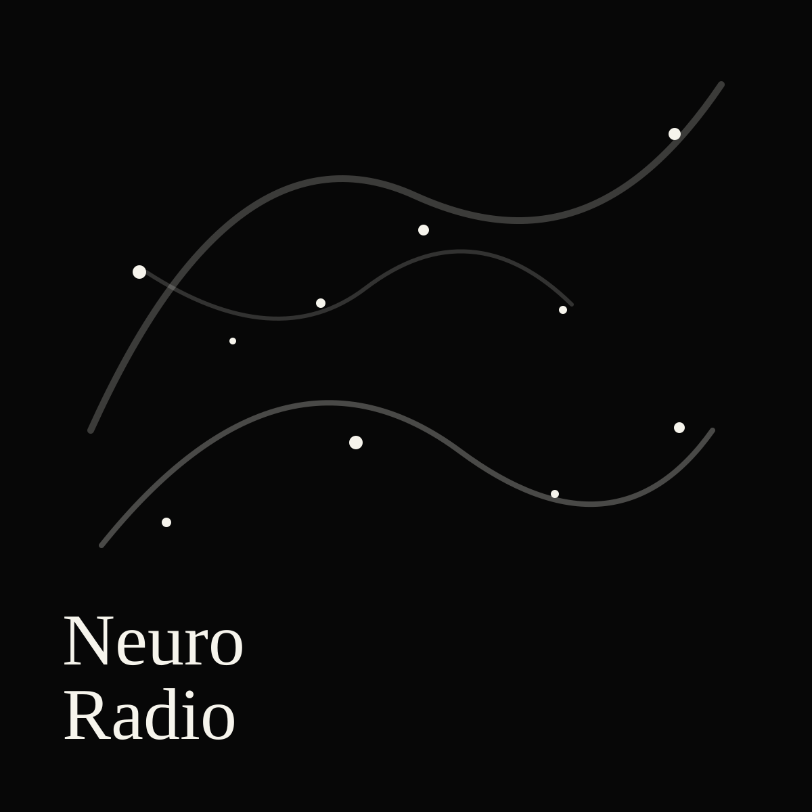

最新回
#104 Empire Social State of Mind
東京科学大学 黒田研究室 特任准教授の小坂田拓哉さんゲスト回。NYUでのオキシトシン&社会行動の研究、久しぶりの日本での研究生活、NYCの思い出等。 (2026/04/10 収録)
神経科学者によるPodcast
NeuroRadioは、神経科学の新着論文、研究業界、海外での研究生活を語る日本語ポッドキャストです。

最新回
東京科学大学 黒田研究室 特任准教授の小坂田拓哉さんゲスト回。NYUでのオキシトシン&社会行動の研究、久しぶりの日本での研究生活、NYCの思い出等。 (2026/04/10 収録)
Subscribe
各種ポッドキャストクライアントで購読すると、新しいエピソードを自動で受け取れます。
About
Recent Episodes
2026-05-12
東京科学大学 黒田研究室 特任准教授の小坂田拓哉さんゲスト回。NYUでのオキシトシン&社会行動の研究、久しぶりの日本での研究生活、NYCの思い出等。 (2026/04/10 収録)
詳細を見る2026-04-08
COSYNE2026の様子、ポルトガル旅行、萩原ラボ立ち上げ等、近況報告雑談。 (2026/04/04 収録)
詳細を見る2025-12-31
Johns Hopkins University、Neuroscience PhD Candidateの末岡陽太朗さんゲスト回。今年出た1つ目のPhDメイン仕事、theta precession、JHUやMITでの学生生活、など。 (2025/12/14 収録)
詳細を見る2025-12-24
SfN2025反省会。メキシコ旅行、学会での社交、ポスター発表でのコミュニケーション方法など雑談。 (2025/12/06 収録)
詳細を見る2025-11-01
自然科学研究機構・生理学研究所にて独立する萩原賢太さんゲスト回。アメリカの現状と脱出に至る過程、立ち上げるラボでのプロジェクト、五十嵐ラボ@東北大、など。 (9/16 収録)
詳細を見るTopics
Featured Notes
東京科学大学 黒田研究室 特任准教授の小坂田拓哉さんゲスト回。NYUでのオキシトシン&社会行動の研究、久しぶりの日本での研究生活、NYCの思い出等。 (2026/04/10 収録)